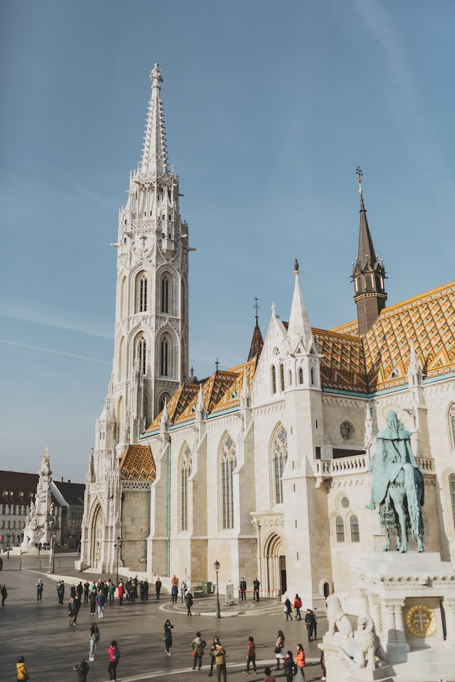

.jpg)
Chainbridge
In this article we look at the conditions in Budapest from 1830 to 1849 to get a better understanding of the importance of the Chain Bridge.
The politician Istvan Szechenyi named in his book Hitel three problems for the economic backwardness of Hungary during the Industrial Revolution: tax exemption of the nobility, non-saleability of land and the disenfranchisement of the peasant (peasants were serfs of the nobility).
Szecheny was strongly influenced by the Industrial Revolution that had already taken place in England, and as a young man he smuggled a steam engine from England to Hungary. The above mentioned points, which he mentioned in his book "Htiel", slowed down the Hungarian economy and made investments very difficult, for example to have money for the purchase of steam engines to make agriculture efficient. The non-saleability of the land meant that banks, when granting loans, could not rely on any collateral other than the willingness of the peasants to repay the loan.
Szecsenyi also publicly discussed his ideas in the Diet, financed undertakings such as the Academy of Sciences, and launched some initiatives such as the construction of the Chain Bridge between Buda and Pest.
A big problem of the Hungarian economy was that there were large flooded areas. The land there was of course used for agriculture, but this use was greatly hindered by the fact that it was flooded again and again. In order to control the floods, Szechenyi had the rivers Tisza and Danube regulated.
However, he had a second problem, the many shallow places made it impossible to use the waterways for transportation by navigation. The riverbed had to be dug out to allow continuous navigation.
A big project was the Chain Bridge, which was built in the 1840s.
The significance of this was that transportation became easier.
Temporary bridges had to be built beforehand for people and also for the transport of goods across the Danube, which were fragile and not particularly strong, but it was also a symbolic matter.
Firstly, that a bridge was built and secondly, that the conditions of use were the same for everyone.
Everyone had to pay bridge fees to get across, including the nobles. So no distinction was made between the farmers, the foreigners and the aristocrats.
Everyone had to pay this bridge fee, which was a democratic act and therefore also had a symbolic meaning. These reforms meant a direct attack on the existing model of rule and incurred the wrath of the nobility.
The Chain Bridge and another infrastructure project, the expansion of a 50 km long railway line between Pest and Vac, were key factors that led to the outbreak of the revolution in 1848/49. At the same time, the completion of the Chain Bridge marked the birth of the city of Buda-Pest, as it connected the two cities of Buda and Pest for the first time.
Parliament
Budapest was united from three cities in 1873, namely Buda, Óbuda, and Pest. Seven years later the Diet resolved to establish a new, representative parliament building, expressing the sovereignty of the nation.
The building was planned to face the Danube River. An international competition was held, and Imre Steindl emerged as the victor; the plans of two other competitors were later also realized in the form of the Ethnographic Museum and the Hungarian Ministry of Agriculture, both facing the Parliament Building.
One reason that Steindl's proposal was chosen is that his neo-Gothic plans bore a strong resemblance with the Palace of Westminster in London.
Leading Hungarian politicians of the 19th century found it extremely important that the country's new parliament building should symbolise their commitment to Western Europe, especially Britain, the country Hungarian reformers considered a political role model. Construction from the winning plan was started in 1885, and the building was inaugurated on the presumed 1,000th anniversary of the country in 1896.
The keys to the building being handed over in 1902, however, It was not fully completed until 1904. The architect of the building first went blind and then later, died before its completion.
About 100,000 people were involved in its construction, during which 40 million bricks, half a million precious stones and 40 kg of gold were used. Since World War II the legislature became unicameral, and today the government uses only a small portion of the building.
During the People's Republic of Hungary a red star perched on the top of the dome, but it was removed in 1990 after the fall of communism.
Mátyás Szűrös declared the Hungarian Republic from the balcony facing Kossuth Lajos Square on 23 October 1989.
The Parliament Building is built in the Gothic Revival style; it has a symmetrical façade and a central dome.
The dome is Renaissance Revival architecture. The parliament is also largely symmetrical from the inside, with two identical parliament halls on the opposing sides of the building.
One of the two halls is still in use today for sessions of the Hungarian National Assembly, the other for ceremonies, conferences, and guided tours.
It is 268 m long and 123 m wide.

Mátyás-templom
The Matthias Church, also known as the Church of the Assumption of the Buda Castle, is a Roman Catholic church located in Budapest, Hungary. Its history is quite remarkable.
Originally, it was believed to have been constructed in Romanesque style in 1015, although there is limited evidence to support this claim. The current building, with its distinctive late Gothic style, was erected in the 14th century and underwent significant restoration work during the 19th century.
Throughout its existence, the Matthias Church played a central role in Hungarian history. It stood as one of the largest churches in medieval Buda and witnessed several pivotal moments. Notably, it served as the site for the coronations of two Hungarian kings, Franz Joseph I and Charles IV.
One of the church's most famous incidents is the "Marian Miracle" of Buda, which occurred during a siege. A hidden Madonna statue was revealed, significantly impacting the morale of those within the city.
The church endured various transformations over the centuries, including a period when it was converted into a mosque during the Turkish occupation. However, in the 19th century, a substantial reconstruction effort, led by architect Frigyes Schulek, aimed to restore its original appearance.
The Matthias Church holds a prominent place in Hungarian culture and identity. It has witnessed royal weddings, coronations, and numerous historical events. Its historical and architectural significance continues to draw visitors and pilgrims from around the world, making it an enduring symbol of Hungary's rich cultural and religious heritage.